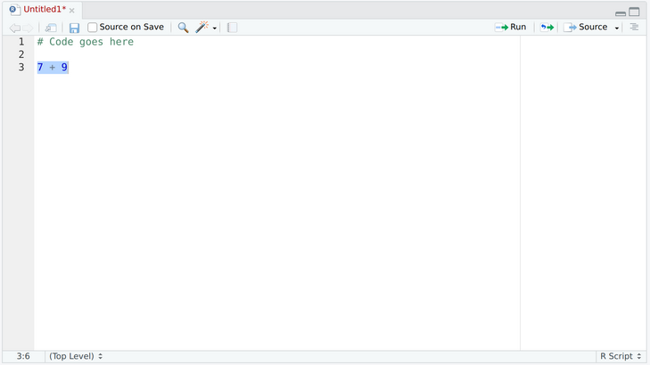
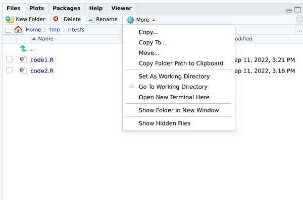
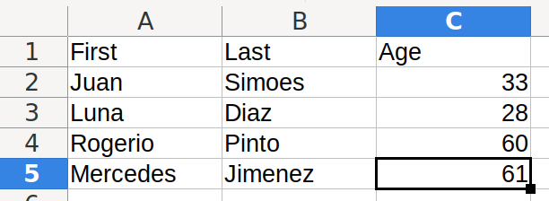
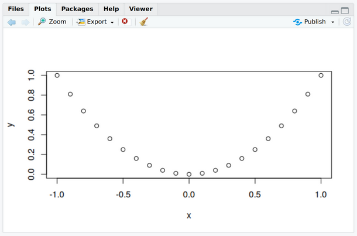

2.1.2 Files
When we close R, we lose everything we did – the variables and functions we defined are lost. In order to keep our work, we need to use files. There are two types of files we are going to use:
- Source code: where we write the code that needs to be executed.
- Data files: where we write the data we analyze, and the results we obtain.
1 Source code
In RStudio, we manipulate source code in the code panel, located at the upper-left part of the screen.

In this panel, we can have multiple files open at the same time. For example, in this image we have a file Untitled1. The red color means this file is temporary and we need to save it somewhere. The asterisk * means that there were changes since the last time the file was changed.
To run the code, you need to select the code you want to execute (such as 7+9 above), and press the Run button. The result can be seen in the console, in the lower-left panel.
Files can be open from the “File -> Open File…” menu, or by pressing CTRL-O. Files can be saved by pressing the disquette icon, or by pressing CTRL-S.
1.1 Working with multiple files
When doing long manipulations, it is convenient to decompose your work in multiple files. In order to do so, first create a folder with your name in the desktop. After, on the lower-right panel, go to your folder (in the image below, it is named r-tests), go to the More menu, and click in Set As Working Directory.

We are going to create two files. The first one will be named code1.R, and the second one code2.R. In code2.R, define the following function sayHello:
sayHello <- function(name){
return(paste("Hello", name))
}In code1.R, we can use this function by sourcing code2.R:
# Import the file. This defines the function `sayHello`.
source("code2.R")
# Define a variable `x`
x <- 5
# Depending on the value of `x`, do something different.
if (x > 10) {
sayHello("Big Number")
} else {
sayHello("Small Number")
}To execute this file, select the block of code, and press Run. Change the value of x, and run it again, to see how the code works.
2 Working with data files
Open Excel, and create a file as follows, with first name, family name and age. You may use different data.

Save it as a .csv file, named data. We can load this file in R and save it in the variable myData:
myData <- read.csv("data.csv")The resulting data will be a Data Frame:
> myData
First Last Age
1 Juan Simoes 33
2 Luna Diaz 28
3 Rogerio Pinto 60
4 Mercedes Jimenez 61It has rows and columns. You can refer to rows by numbers, and to columns by either number or name:
myData # See the table
myData["First"] # See all the first names
myData[1] # See all the first names, but referring to the order
myData[1,] # See the data of the first person
myData$Age # See all ages, but as a vector2.1 Working with data frames
With this variable available, we can analyze the data. For example, what is the highest age in our data set?
> max(myData$Age)
[1] 61But who’s this person? We can ask this using:
> which.max(myData$Age) # Get the index of the maximum value
[1] 4
> oldest <- which.max(myData$Age) # Store it in a variable
> myData[oldest,] # Get the corresponding row
First Last Age
4 Mercedes Jimenez 61And now we know the oldest person in the data set!
2.2 Plots
Plotting data in R is very simple. Let’s start by preparing some data:
# Function that squares a number.
square <- function(a) {
return(a*a)
}
# The X values for the graph.
x <- seq(from=-1,to=1,by=0.1)
# The Y values for the graph.
# The square of each number in x.
y <- sapply(x,square)
# Create the graph.
plot(x,y)On the lower-right panel, you should see the graph:
 Using the Export button, you can save this image as a file.